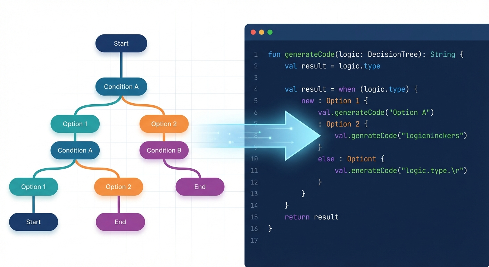

Symbolic Logic meets LLM Intuition
The DecisionTreeTask combines the semantic understanding of Large Language Models with the mathematical rigor of Information Gain algorithms to build interpretable, executable decision trees.
Try the Simulation

Semantic Splitting
Unlike traditional trees that only handle numbers, our agent understands text. It generates rules like description contains "error" or sku matches "^[A-Z]-123".
Math-Verified Accuracy
The LLM proposes the rules, but the data decides. We calculate Entropy and Information Gain for every proposal to ensure the tree is statistically sound.

Code Generation
The final output isn't just a report—it's a compiled Kotlin function ready to be dropped into your production codebase.
Interactive Simulation
See how the agent builds a tree to predict Customer Churn based on mixed data types.
- Age (Int)
- Contract (String)
- LastCall (Text)
- Usage (Float)
Configuration & Usage
The DecisionTreeTask is configured via the DecisionTreeTaskExecutionConfigData class.
Parameters
-
data_fileString
Path to the CSV or JSONL file containing the training data. -
target_columnString
The name of the column you want to predict. -
max_depthInt
Limits the height of the tree to prevent overfitting. Default: 3. -
candidate_rulesInt
How many splitting rules the LLM should propose for each node. Higher numbers increase accuracy but cost more tokens.